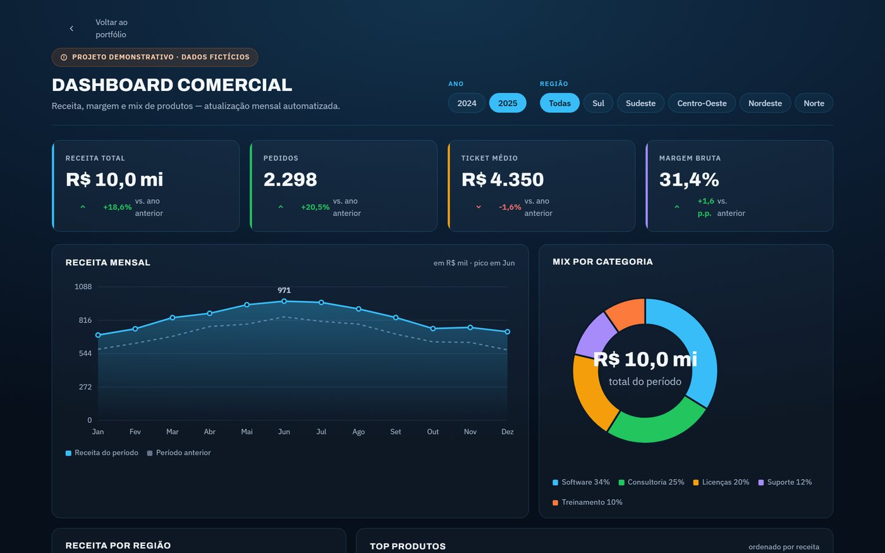
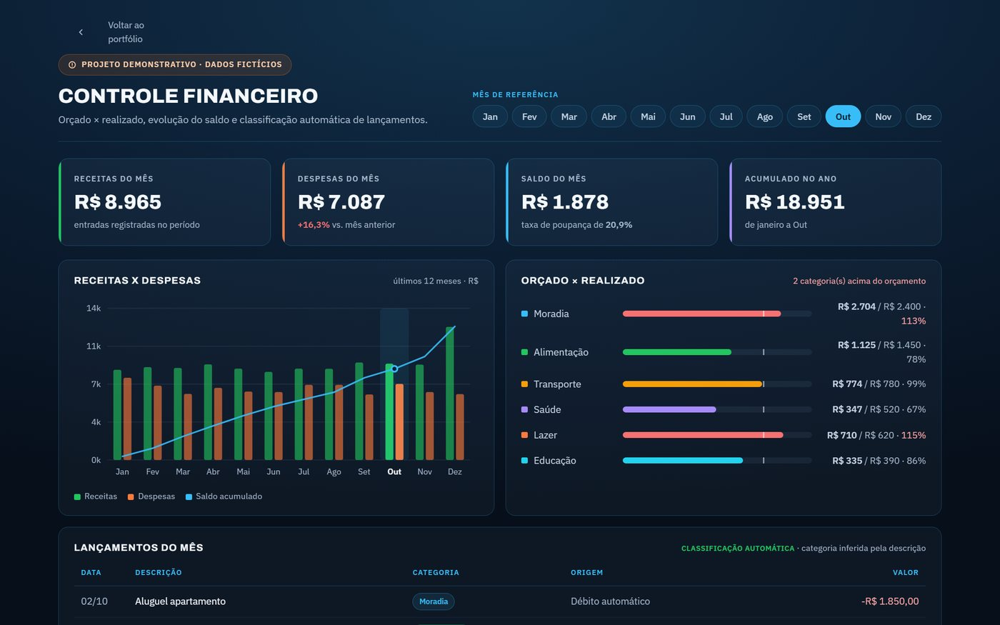
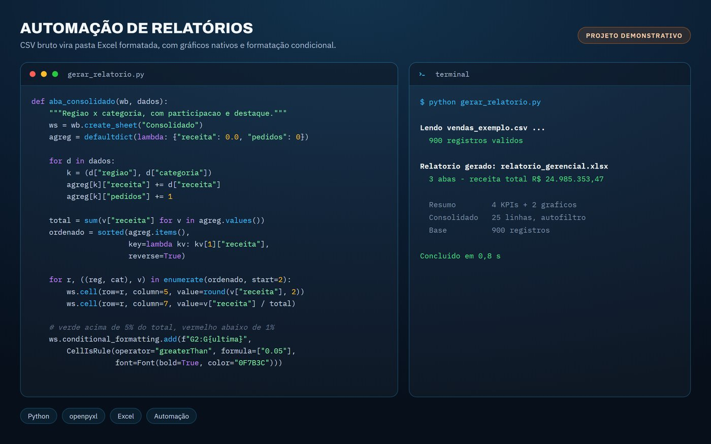
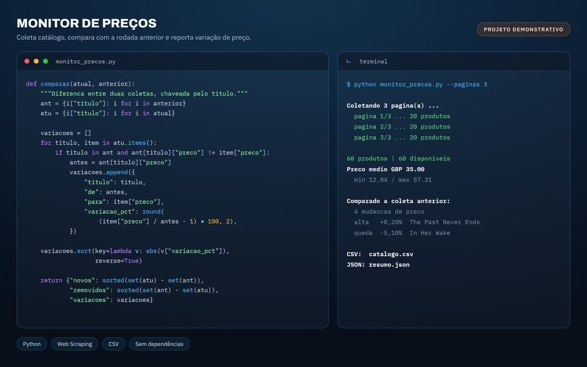

Excel Avançado
Dashboards dinâmicos, VBA, análise de dados complexos e macros que eliminam o trabalho repetido.
Transformo planilha manual e processo repetitivo em dashboard, relatório automatizado e sistema que roda sozinho. Excel avançado, Python, Power BI, automação e desenvolvimento web.
Cinco frentes que se conectam: coletar o dado, tratar, automatizar a rotina e entregar num painel que qualquer pessoa da equipe consiga ler.
Dashboards dinâmicos, VBA, análise de dados complexos e macros que eliminam o trabalho repetido.
Automação de processos, scripts sob medida, web scraping e rotinas de tratamento de dados.
Relatórios interativos, KPIs, data visualization e business intelligence para decisão rápida.
Otimização de fluxos, RPA (Robotic Process Automation) e ganho de eficiência operacional.
Criação de sites, landing pages e sistemas front-end rápidos, responsivos e fáceis de manter.
Projetos que construí para mostrar como trabalho — os dois primeiros você pode abrir e mexer agora mesmo. Os dados são fictícios e estão marcados como tal em cada projeto. O próprio site que você está lendo é o quinto: HTML, CSS e JavaScript puro, sem framework.




Sou Gustavo Gorges, de Joinville (SC). Estudo Sistemas da Informação na Univille e trabalho com dados e automação — a parte chata do trabalho de escritório, aquela que consome tempo e não devolve nada em troca.
Meu foco é pequena e média empresa: o lugar onde uma planilha mal resolvida custa horas toda semana e onde ninguém tem time de TI para resolver. Começo entendendo o processo como ele é hoje, não como deveria ser — e só então proponho o que automatizar.
Estou no início como prestador de serviço, e é por isso que os projetos acima estão abertos: em vez de pedir que você confie na minha palavra, prefiro que você clique, mexa e leia o código.
Me conte qual processo está consumindo seu tempo. Respondo em até 24 horas, e o primeiro diagnóstico não custa nada.
Chamar no WhatsApp